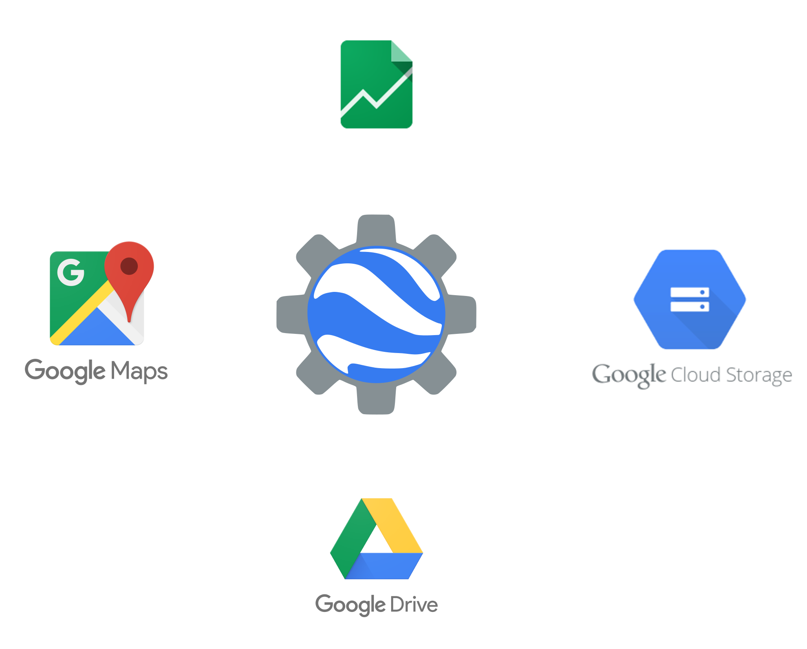
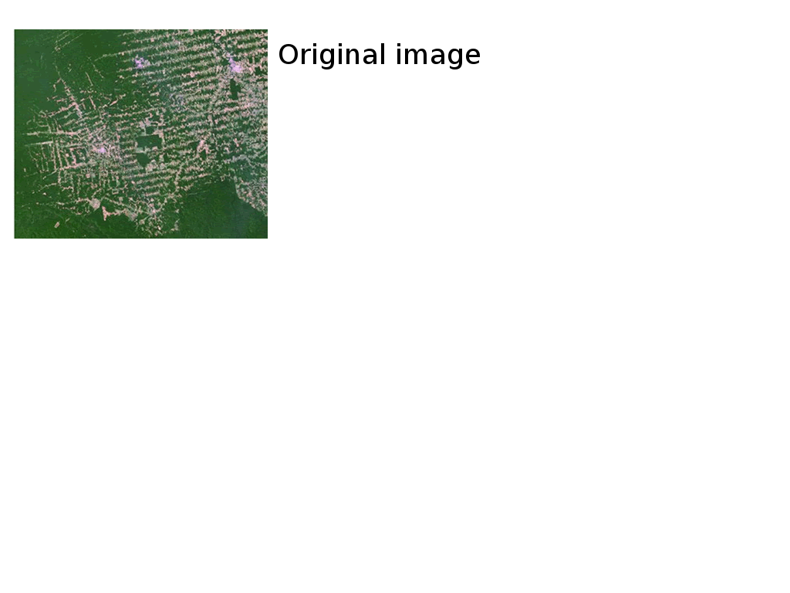
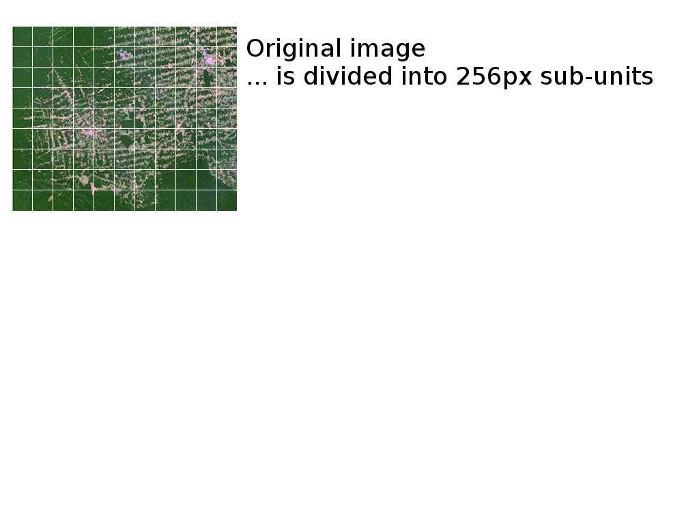
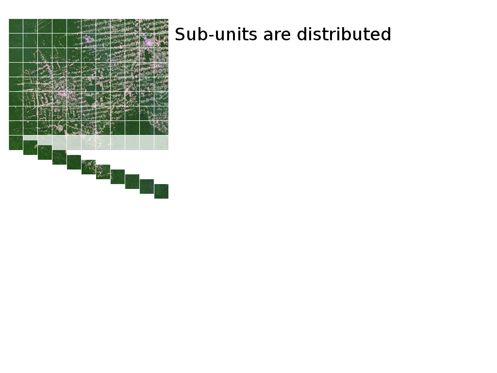
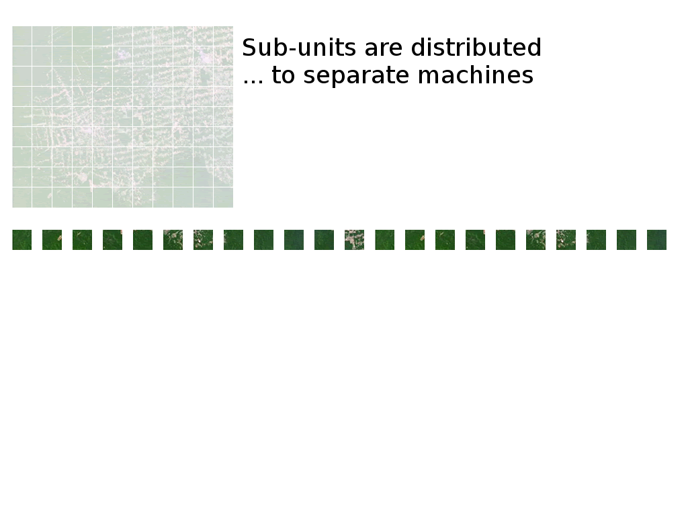
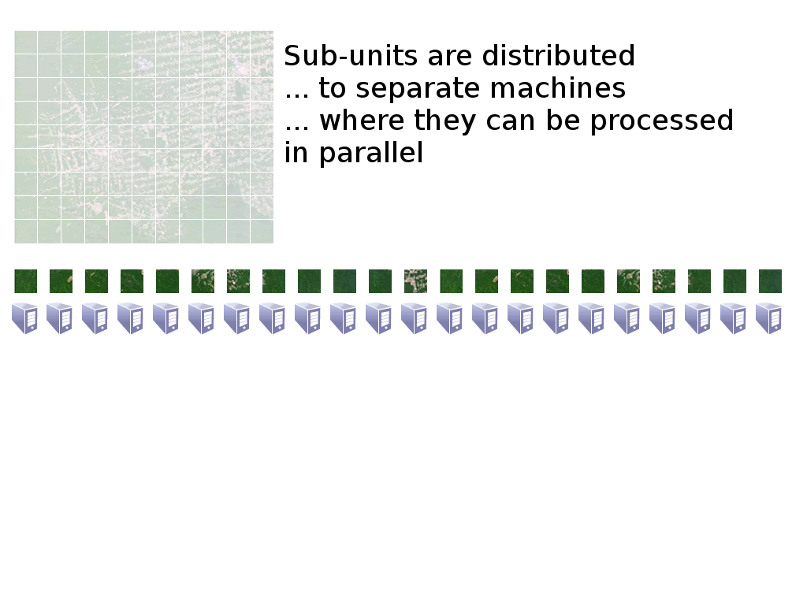
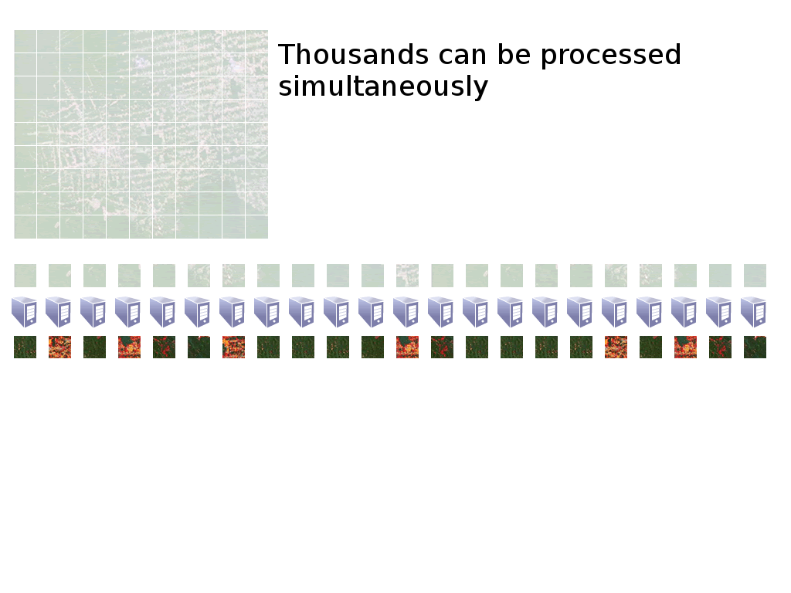
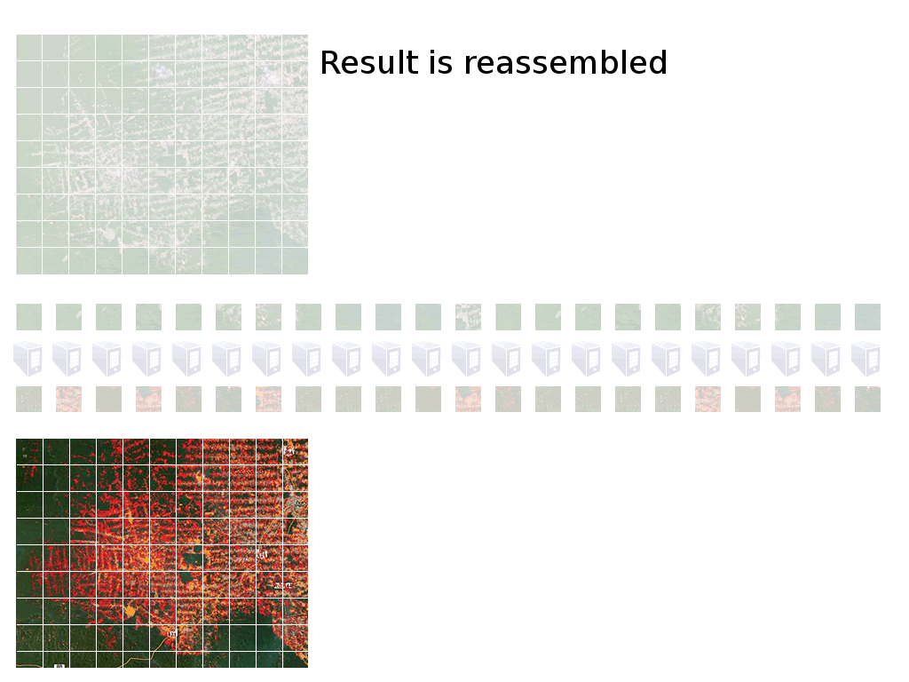
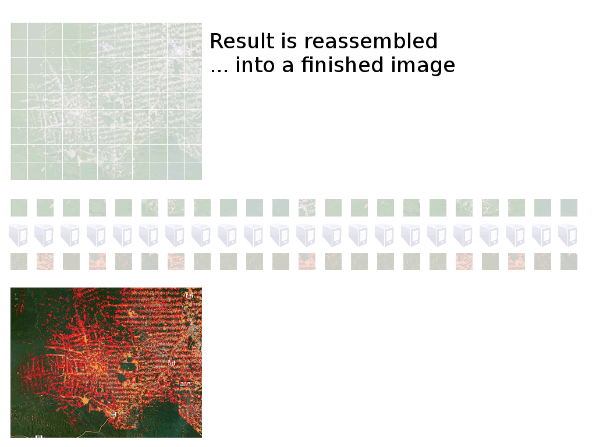
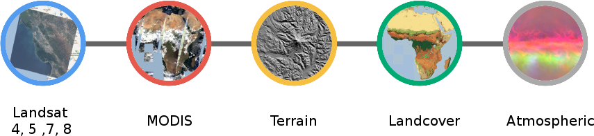

Introduction to GEE
Digital Soil Mapping
José Padarian
University of Sydney
Outline
- What is GEE and how it works
- Explore GEE API (Javascript and
Python) - DSM workflow (with examples)
- Compile covariates
- Extract data from covariates
- Model training
- Generate map
- Export
Google Earth Engine

Features
- Access to over 40 years of Satellite Imagery (with daily updates)
- Algorithms to analyse that data
- Google's computer clusters to analyse the data at scale
- A web-based tool for interactive data exploration
How does it work?








Features
- Access to over 40 years of Satellite Imagery (with daily updates)
- Algorithms to analyse that data
- Google's computer clusters to analyse the data at scale
- A web-based tool for interactive data exploration
DSM workflow
Compile covariates

> 200 public datasets
> 4000 new images every day
> 5 million images
> 5 petabytes of data
Examples
Extract data from covariates
- At the moment only using Fusion Tables
- Another alternative is using GeoJSON (usually for small datasets)
- Limit of 500,000 rows (also a size limit)
We will be using data SOC from Edgeroi
Let's import data into
Examples
Model training
- Classification and Regression algorithms
- Limited number of algorithms available
- Tree-like (CART, Random Forest)
- Perceptron
- Support Vector Machine
- Others
- Alternative to use expressions (tree-like structures, linear models)
Examples
Generate map
This is the step where we can get most speed gain
- The predicion is made at the viewport
- It depends on the extent
- It depends on the zoom level (resolution)
It's not always necessary to view the prediction (lazy evaluation)
Examples
Export
There are multiple alternatives:

It is also possible to export images as Assets